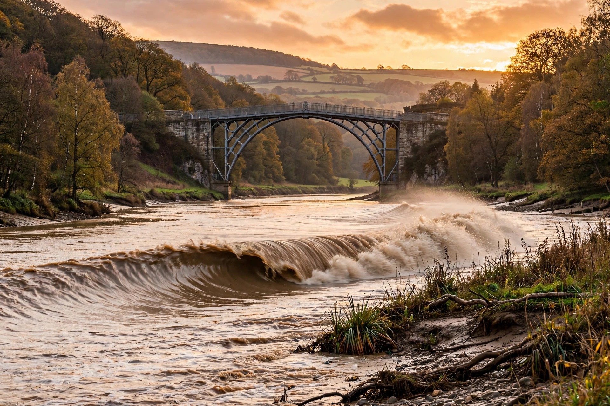

The River Severn (Welsh: Afon Hafren), at about 220 miles (354 km) long, is the longest river in Great Britain. It is also the second-longest river in the British Isles, after the River Shannon in Ireland. It rises in Plynlimon, in the Cambrian Mountains of Wales.

From Plynlimon the Severn flows through Shropshire towns including Shrewsbury, Ironbridge — site of the world's first major cast iron bridge (1779) — Bridgnorth, then through Worcester and Tewkesbury to Gloucester, before widening into the Severn Estuary and the Bristol Channel. Major tributaries include the Vyrnwy, Teme, Stour, Warwickshire Avon and Wye.
The estuary has the second-highest tidal range in the world, up to about 15 metres, and is famous for the Severn bore, a tidal wave that surges upstream. Crossings include the Severn Bridge (1966) and the Prince of Wales Bridge (1996). The river has historically flooded severely, notably in 1947, 2000 and 2007, and provides major drinking water supplies.